SobolIndicesExperiment¶
- class SobolIndicesExperiment(*args)¶
Experiment to computeSobol’ indices.
- Available constructors:
SobolIndicesExperiment(distribution, size, computeSecondOrder=False)
SobolIndicesExperiment(experiment, computeSecondOrder=False)
- Parameters
- distribution
Distribution Distribution
 with an independent copula used to generate the
set of input data.
with an independent copula used to generate the
set of input data.- sizepositive int
Size
 of each of the two independent initial samples.
For the total size of the experiment see notes below.
of each of the two independent initial samples.
For the total size of the experiment see notes below.- experiment
WeightedExperiment Design of experiment used to sample the distribution.
- computeSecondOrderbool, defaults to False
Whether to add points to compute second order indices
- distribution
See also
Notes
Sensitivity algorithms rely on the definition of specific designs.
The
generate()method of this class produces aSampleto be supplied to the contructor of one of theSobolIndicesAlgorithmimplementations:The chosen
SobolIndicesAlgorithmimplementation then uses the sample as input design, which means it represents (but is not a realization of) a random vector .
.Either the
Distributionof or a
or a WeightedExperimentthat represents it must be supplied to the class constructor.If a
WeightedExperimentis supplied, the class uses it directly.If the distribution of
is supplied, the class generates a WeightedExperiment. To do this, it duplicates the distribution: every marginal is repeated once to produce a 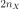-dimensional distribution. This trick makes it possible to choose aWeightedExperimentwith non-iid samples (that is aLHSExperimentor aLowDiscrepancyExperiment) to represent the original -dimensional distribution.
-dimensional distribution.The type of
WeightedExperimentdepends on the value of'SobolIndicesExperiment-SamplingMethod'in theResourceMap:'MonteCarlo'for aMonteCarloExperiment.'LHS'for anLHSExperimentwith alwaysShuffle and randomShift set to True.'QMC'for aLowDiscrepancyExperiment(with randomize flag set to False) built from aSobolSequence.
'MonteCarlo'is the default choice because it allows the chosenSobolIndicesAlgorithmimplementation to use the asymptotic distribution of the estimators of the Sobol’ indices.Note that
'QMC'is only possible if 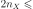SobolSequence.MaximumDimension. If'QMC'is specified but
SobolSequence.MaximumDimension, the class falls back to'LHS'.>>> from openturns import SobolSequence >>> print(SobolSequence.MaximumDimension) 1111
Regardless of the type of
WeightedExperiment, the class splits it into two samples with the same size:
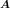 and  .
Their columns are mixed in order to produce a very large sample: the inputDesign argument
taken by one of the constructors of every
.
Their columns are mixed in order to produce a very large sample: the inputDesign argument
taken by one of the constructors of every SobolIndicesAlgorithmimplementation.If computeSecondOrder is set to False, the input design is of size 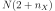. The first
rows contain the sample and the next rows the sample .
The last 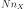 rows contain copies of ,
each with a different column replaced by the corresponding column from
(they are the matrices 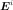 from the documentation page of SobolIndicesAlgorithm).If computeSecondOrder is set to True and 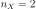, the input design is the same as in the case where computeSecondOrder is False (see [saltelli2002]).
If computeSecondOrder is set to True and 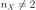, the input design size is 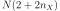. The first rows are the same as when computeSecondOrder is False. The last rows contain
copies of ,
each with a different column replaced by the corresponding column from
(they are the matrices 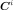 from the documentation page of SobolIndicesAlgorithm).Examples
Create a sample suitable to estimate first and total order Sobol’ indices:
>>> import openturns as ot >>> ot.RandomGenerator.SetSeed(0) >>> formula = ['sin(pi_*X1)+7*sin(pi_*X2)^2+0.1*(pi_*X3)^4*sin(pi_*X1)'] >>> model = ot.SymbolicFunction(['X1', 'X2', 'X3'], formula) >>> distribution = ot.ComposedDistribution([ot.Uniform(-1.0, 1.0)] * 3) >>> size = 10 >>> experiment = ot.SobolIndicesExperiment(distribution, size) >>> sample = experiment.generate()
Create a sample suitable to estimate first, total order and second order Sobol’ indices:
>>> import openturns as ot >>> ot.RandomGenerator.SetSeed(0) >>> formula = ['sin(pi_*X1)+7*sin(pi_*X2)^2+0.1*(pi_*X3)^4*sin(pi_*X1)'] >>> model = ot.SymbolicFunction(['X1', 'X2', 'X3'], formula) >>> distribution = ot.ComposedDistribution([ot.Uniform(-1.0, 1.0)] * 3) >>> size = 10 >>> computeSecondOrder = True >>> experiment = ot.SobolIndicesExperiment(distribution, size, computeSecondOrder) >>> sample = experiment.generate()
Methods
generate()Generate points according to the type of the experiment.
generateWithWeights(weights)Generate points and their associated weight according to the type of the experiment.
Accessor to the object's name.
Accessor to the distribution.
getId()Accessor to the object's id.
getName()Accessor to the object's name.
Accessor to the object's shadowed id.
getSize()Accessor to the size of the generated sample.
Accessor to the object's visibility state.
hasName()Test if the object is named.
Ask whether the experiment has uniform weights.
Test if the object has a distinguishable name.
setDistribution(distribution)Accessor to the distribution.
setName(name)Accessor to the object's name.
setShadowedId(id)Accessor to the object's shadowed id.
setSize(size)Accessor to the size of the generated sample.
setVisibility(visible)Accessor to the object's visibility state.
getWeightedExperiment
- __init__(*args)¶
- generate()¶
Generate points according to the type of the experiment.
- Returns
- sample
Sample Points
 which constitute the design of experiments
with 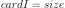. The sampling method is defined by the nature of
the weighted experiment.
which constitute the design of experiments
with 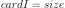. The sampling method is defined by the nature of
the weighted experiment.
- sample
Examples
>>> import openturns as ot >>> ot.RandomGenerator.SetSeed(0) >>> myExperiment = ot.MonteCarloExperiment(ot.Normal(2), 5) >>> sample = myExperiment.generate() >>> print(sample) [ X0 X1 ] 0 : [ 0.608202 -1.26617 ] 1 : [ -0.438266 1.20548 ] 2 : [ -2.18139 0.350042 ] 3 : [ -0.355007 1.43725 ] 4 : [ 0.810668 0.793156 ]
- generateWithWeights(weights)¶
Generate points and their associated weight according to the type of the experiment.
- Returns
Examples
>>> import openturns as ot >>> ot.RandomGenerator.SetSeed(0) >>> myExperiment = ot.MonteCarloExperiment(ot.Normal(2), 5) >>> sample, weights = myExperiment.generateWithWeights() >>> print(sample) [ X0 X1 ] 0 : [ 0.608202 -1.26617 ] 1 : [ -0.438266 1.20548 ] 2 : [ -2.18139 0.350042 ] 3 : [ -0.355007 1.43725 ] 4 : [ 0.810668 0.793156 ] >>> print(weights) [0.2,0.2,0.2,0.2,0.2]
- getClassName()¶
Accessor to the object’s name.
- Returns
- class_namestr
The object class name (object.__class__.__name__).
- getDistribution()¶
Accessor to the distribution.
- Returns
- distribution
Distribution Distribution used to generate the set of input data.
- distribution
- getId()¶
Accessor to the object’s id.
- Returns
- idint
Internal unique identifier.
- getName()¶
Accessor to the object’s name.
- Returns
- namestr
The name of the object.
- getShadowedId()¶
Accessor to the object’s shadowed id.
- Returns
- idint
Internal unique identifier.
- getSize()¶
Accessor to the size of the generated sample.
- Returns
- sizepositive int
Number
 of points constituting the design of experiments.
of points constituting the design of experiments.
- getVisibility()¶
Accessor to the object’s visibility state.
- Returns
- visiblebool
Visibility flag.
- hasName()¶
Test if the object is named.
- Returns
- hasNamebool
True if the name is not empty.
- hasUniformWeights()¶
Ask whether the experiment has uniform weights.
- Returns
- hasUniformWeightsbool
Whether the experiment has uniform weights.
- hasVisibleName()¶
Test if the object has a distinguishable name.
- Returns
- hasVisibleNamebool
True if the name is not empty and not the default one.
- setDistribution(distribution)¶
Accessor to the distribution.
- Parameters
- distribution
Distribution Distribution used to generate the set of input data.
- distribution
- setName(name)¶
Accessor to the object’s name.
- Parameters
- namestr
The name of the object.
- setShadowedId(id)¶
Accessor to the object’s shadowed id.
- Parameters
- idint
Internal unique identifier.
- setSize(size)¶
Accessor to the size of the generated sample.
- Parameters
- sizepositive int
Number
of points constituting the design of experiments.
- setVisibility(visible)¶
Accessor to the object’s visibility state.
- Parameters
- visiblebool
Visibility flag.
 associated with the points. By default,
all the weights are equal to 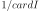.
associated with the points. By default,
all the weights are equal to 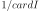.